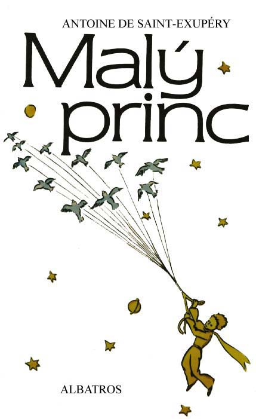
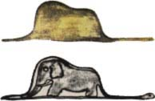

Malý princ, kouzelná pohádková bytost, pøichází na na¹i zemi ze vzdálených vesmírných svìtù, aby se kdesi v africké pou¹ti setkal s autorem na¹eho pøíbìhu a zjevil mu tajemství své podivuhodné ¾ivotní pouti. Ale zjeví mu vlastnì daleko víc: tajemství èistého srdce, dobra a krásy. Je to opravdu líbezná kní¾ka, která vám bude jistì právì tak milá a blízká, jako byla v¹em ètenáøským generacím, a k ní¾ se budete i pozdìji rádi vracet.

|
Napsal Antoine de Saint-Exupéry, 1946 Pøelo¾ila Zdeòka Stavinohová, 1972 Ilustroval Antoine de Saint-Exupéry, 1946 Vydal Albatros, 1989 Pøepsal Jakub Vrána, 1997 |